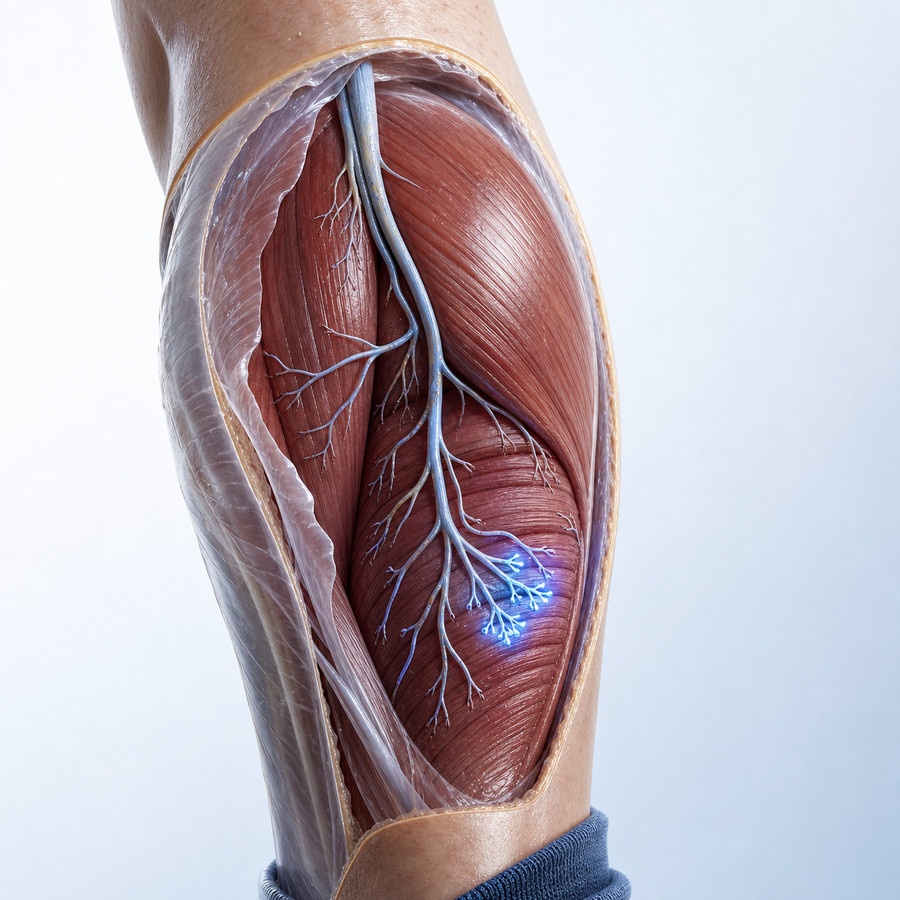
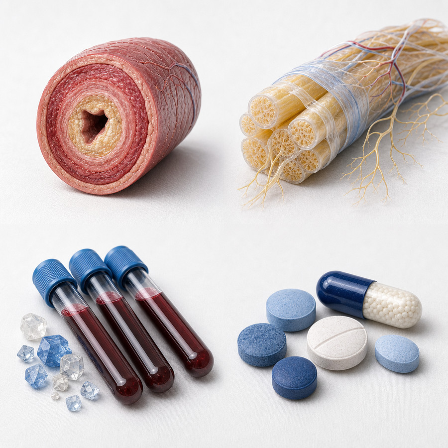
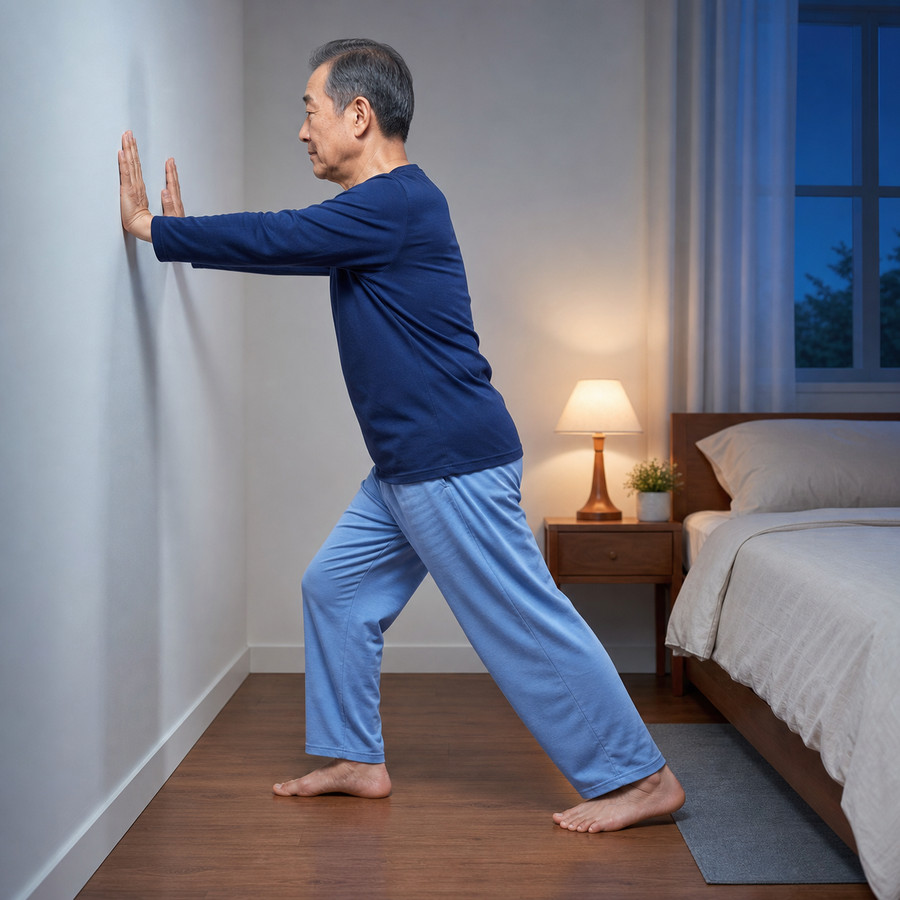
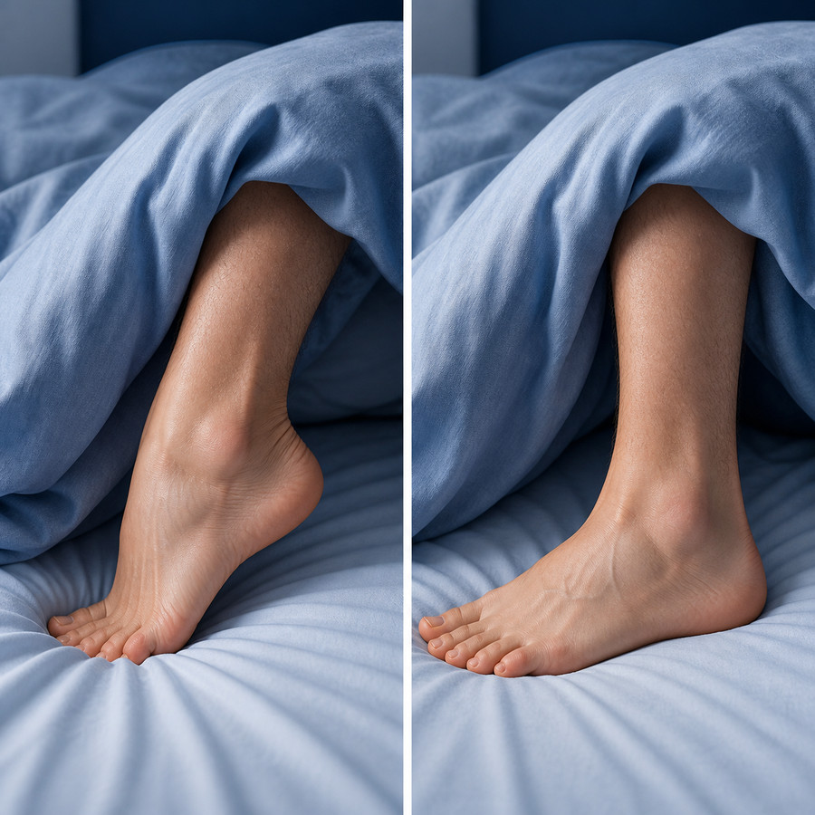

CHAPTER 01 · DEFINITION
진성 경련인가, 아닌가 — 첫 갈림길은 병력 청취다
환자의 "쥐가 난다"는 표현 안에 서로 다른 질환이 섞여 있습니다
근육 하나 또는 한 무리가 갑자기 제멋대로 수축해 몹시 아픈 상태입니다. 쥐가 난 근육이 눈에 보이거나 손으로 만져질 만큼 단단하게 뭉칩니다. 수 초~수 분(드물게 10분) 이어지고, 풀린 뒤에도 누르면 아픈 통증·근육통이 수 시간~48~72시간 남을 수 있습니다. 원문 근거(앵커 없음)
근경직 — 근전도에 전기 신호가 없고 스트레칭으로 안 풀림 · 근간대경련 — 0.2초 이내로 짧게 홱 움직임, 통증 없음 · 근긴장이상 — 반대 방향 근육이 함께 수축해 자세가 비틀림 · 테타니 — 양쪽에 대칭으로, Chvostek·Trousseau 징후 양성 · 하지불안증후군 — 움직이고 싶은 충동만 있고 실제로 뭉치지는 않음(국내 유병률 5.4~7.5%). 원문 근거(앵커 없음)
33%
50세 이상 성인이 야간 하지 경련을 경험
(60세 이상에서는 약 50%)
원문 근거(앵커 없음)
1정말 뭉치는가 — 손으로 만져지는지
2스트레칭으로 즉각 풀리는가
3쉴 때인가 움직일 때인가
Tip · 활동 중에만 생기는 종아리 통증은 경련이 아니라 말초동맥질환·척추관협착증을 먼저 의심합니다.
CHAPTER 02 · PATHOPHYSIOLOGY
근육의 병이 아니라 신경의 과흥분이다
치료 선택이 바뀌는 지점입니다 — 전해질 교정만으로 설명되지 않습니다
경련 신호는 근육이 아니라 운동신경 끝에서 시작합니다(근전도). 원문 근거(앵커 없음)
근육이 짧아진 채 피로가 쌓이면 흥분은 늘고 억제는 줄어듭니다. 스트레칭이 바로 듣는 이유입니다. 원문 근거(앵커 없음)

종아리 근육과 신경근접합부 개념도 — 경련의 기원은 근육이 아니라 말초 운동신경 말단이다. 설명용 일러스트(실제 조직 사진 아님).
Tip · 혈액 검사의 마그네슘 수치가 정상이라고 근육·조직 안까지 정상이라는 뜻은 아닙니다. 다만 그것이 보충 효과를 보장하지도 않습니다(슬라이드 08).
CHAPTER 03 · RED FLAGS
🚩 이 경련은 그냥 경련이 아니다
아래 중 하나라도 있으면 단순한 경련으로 끝내지 않습니다
한쪽·같은 자리 반복 · 팔·몸통까지 · 근력저하·근위축·섬유속연축(운동신경질환) · 걸을 때 유발(말초동맥질환·협착증) · 약 시작 직후. 원문 근거(앵커 없음)
이뇨제 · 베타작용제 · 스타틴 · 니페디핀 · 호르몬제. 어느 쪽이 먼저인지가 핵심입니다. 원문 근거(앵커 없음)
간경변 · 만성콩팥병·투석 · 갑상선 · 당뇨 신경병증 · 임신 · 전해질 이상. 원문 근거(앵커 없음)

감별 네 축 — ①혈관(말초동맥질환·정맥부전) ②신경(신경병증·운동신경질환) ③대사(전해질·간·콩팥·갑상선) ④약물. 설명용 일러스트.
Tip · 특발성 야간 하지경련은 다른 원인을 모두 배제한 뒤 붙이는 이름입니다. 위 네 축을 훑고 나서 붙입니다.
CHAPTER 04 · SECONDARY
먹고 있는 약부터 확인한다 — 가장 흔하고 가장 잘 놓친다
약을 시작한 시점과 증상이 생긴 시점, 어느 쪽이 먼저인지가 핵심입니다
이뇨제(칼륨·마그네슘 저하) · 흡입 β작용제 · 위산억제제(PPI) 장기 복용(마그네슘 저하). 원문 근거(앵커 없음)
스타틴 — 근육효소(CK) 확인 후 감량·변경 검토. 랄록시펜·에스트로겐·정맥 철분제도 보고돼 있습니다. 원문 근거(앵커 없음)
①최근 3개월 안에 시작·증량한 약 ②경련 시작과 어느 쪽이 먼저인지 ③바꿀 수 있는지. 원문 근거(앵커 없음)
1순위
다른 병·약 때문에 생긴 원인 중
가장 흔하고 바로잡을 수 있는 원인
1이뇨제·기관지확장제 — 전해질
2스타틴 — 근육효소(CK) 확인
3위산억제제(PPI) 장기 — 마그네슘
Tip · 경련만 보고 약을 더하기 전에, 이미 먹고 있는 약을 뺄 수 있는지 먼저 봅니다.
CHAPTER 05 · WORKUP
먼저 하는 혈액검사 — 여기서 대부분 갈린다
특발성은 다른 원인을 모두 배제한 뒤 붙이는 이름입니다. 최소한 이만큼은 확인합니다
나트륨·칼륨·칼슘(알부민 보정)·마그네슘 · 혈당/당화혈색소 · 콩팥·간기능 · 갑상선(TSH) · (근육통 시)근육효소(CK). 원문 근거(앵커 없음)
술·영양결핍 → 인(P) · 하지불안증후군 감별 → 페리틴 · 신경병증 의심 → 비타민 B12. 원문 근거(앵커 없음)
근력저하·근위축·섬유속연축 → 근전도·신경전도검사 · 걸을 때 유발+맥박 약함 → 발목-팔 혈압비(ABI) · 다리로 뻗치는 통증 → 요추 MRI. 원문 근거(앵커 없음)
8항목
모두 정상 + 먹는 약 이상 없음
+ 신경 진찰 정상
= 특발성으로 봅니다
1전해질·콩팥·간·갑상선·혈당
2필요하면 CK·페리틴·비타민 B12
3필요할 때만 추가 검사
Tip · 검사를 넓게 벌이기보다 확인할 목록을 정해 두고 매번 같은 항목을 도는 편이 빠릅니다.
CHAPTER 06 · FIRST LINE
1차 치료는 약이 아니라 스트레칭이다
근거가 가장 확실하고, 부작용이 없고, 돈이 들지 않습니다
벽을 짚고 종아리를 편 채 10초씩 3회, 자기 직전 매일. 발끝을 몸 쪽으로 당긴 자세가 핵심입니다. 원문 근거(앵커 없음)
잠자는 자세 · 이불 무게로 발끝이 눌리지 않게 · 수분 · 카페인·술 줄이기. 원문 근거(앵커 없음)

자기 전 종아리 스트레칭 — 벽을 짚고 뒷발 뒤꿈치를 바닥에 붙인 채 발끝을 몸 쪽으로 당깁니다. 10초씩 3회, 매일. 설명용 일러스트.
Tip · '해볼 만한 것' 이 아니라 1차 처방입니다. 약보다 먼저 하는 치료입니다.
CHAPTER 07 · POSTURE
밤새 발끝이 아래로 향해 있으면 경련이 온다
약보다 먼저 바꿀 수 있고, 스스로 확인할 수 있습니다
발끝이 밤새 아래로 향해 있으면 종아리가 짧아진 채 피로가 쌓입니다. 원문 근거(앵커 없음)
이불 무게가 발등을 누르지 않게 발치 쪽을 느슨하게. 필요하면 베개로 발목을 바로 세워 받칩니다. 원문 근거(앵커 없음)
수분 · 카페인·술 줄이기 · 활동량 유지(너무 적어도, 갑자기 늘려도 경련이 옵니다). 원문 근거(앵커 없음)

왼쪽=문제 자세(이불 무게로 발끝이 아래로) · 오른쪽=발목을 바로 세운 자세. 설명용 일러스트.
Tip · 이불 무게는 좀처럼 확인하지 않는 항목입니다. 한 번 살펴보면 오늘 밤부터 바꿀 수 있습니다.
CHAPTER 08 · MAGNESIUM
마그네슘 — 기전은 그럴듯하지만 근거는 음성이다
가장 많이 찾는 보충제입니다. 근거를 있는 그대로 말씀드립니다
혈액 수치가 정상이어도 조직 안은 부족할 수 있지만, 그럴듯한 설명이 효과를 대신하지는 않습니다. 원문 근거(앵커 없음)
임신 · 검사로 확인된 저마그네슘혈증 · 이뇨제·PPI 장기 복용 등 부족이 의심될 때. 원문 근거(앵커 없음)
1부족이 의심되나 — 아니면 근거 없음
2그렇다면 원인부터(약·흡수)
3보충은 그다음
Tip · "안 듣는다" 가 아니라 "가짜약과 차이를 입증하지 못했다" 가 정확한 표현입니다.
CHAPTER 09 · PHARMACOLOGY
약물 — 퀴닌은 쓰지 않고, 남은 선택지는 좁다
⛔ 이 자료에는 용량표를 싣지 않습니다(용량은 최신 허가사항·1차 자료로 확인)
퀴닌 — 효과는 있으나 안전성 때문에 밀려났다 혈소판감소증·심전도 QT 연장 위험 때문에, 여러 나라 규제기관이 야간 하지경련에 쓰는 것을 제한했습니다.
PMID 25842375
0순위
약물은 1차가 아닙니다
스트레칭·유발요인 정리가 먼저
1퀴닌 — 일상적으로 쓰지 않음
2다른 병이 있으면 그 원인부터
Tip · 약을 시작할 때 중단 조건과 재평가 시점을 함께 적어두면 불필요한 장기 복용을 막습니다.
CHAPTER 10 · ACUTE
쥐가 난 순간 — 무엇을 하고, 무엇을 알아둘 것인가
바로 풀리는 원리는 스트레칭과 반사 억제입니다
쥐가 난 근육을 손으로 강하게 늘려 펴기 → 마사지·온찜질. 원문 근거(앵커 없음)
쥐가 풀린 뒤에도 2~3일은 누르면 아플 수 있습니다. 2주 동안 증상 일지를 적어 오십시오. 원문 근거(앵커 없음)
즉시
손으로 늘려 펴기 — 가장 먼저
원문 근거(앵커 없음)
1늘려 펴기 → 풀리는지 확인
2마사지·온찜질
32주 일지 → 다시 진료
Tip · 밤에는 잠결에 대응하게 됩니다. 말로만 듣지 마시고 진료실에서 한 번 직접 해보십시오.
CHAPTER 11 · SPECIAL
특수 상황 — 여기서는 다른 약을 씁니다
앞의 결론을 그대로 적용하면 안 되는 세 가지 경우
권고 종아리 스트레칭 등 약을 쓰지 않는 방법이 1차입니다.
금기 퀴닌은 임신 중 쓰지 않습니다. 원문 근거(앵커 없음)
3집단
간경변 · 투석 · 임신
— 앞의 결론을 그대로 쓰지 않습니다
1간경변 — 타우린 근거
2투석 — 비타민 E·가바펜틴, 투석 처방 조정
3임신 — 스트레칭 권고 / 퀴닌만 금기
Tip · 간경변이 있으면 경련이 흔한데도 진료 때 잘 이야기하지 않는 증상입니다. 있으면 꼭 말씀해 주십시오.
CHAPTER 12 · SUMMARY
진료실에서 밟는 순서
이 자료의 결론을 한 장으로
단단하게 뭉침 · 늘리면 바로 풀림 · 수 초~수 분 = 진성 경련 → 네 축 훑기. 원문 근거(앵커 없음)
6주
스트레칭을 시작한 뒤
처음 다시 평가하는 시점
1감별 → 위험신호 네 축
2스트레칭 6주
3그다음 약물
Tip · 대부분의 특발성 야간 하지경련은 설명과 스트레칭에서 끝납니다. 약은 그다음 이야기입니다.
CLOSING
다시 보기 · 문의
QR을 스캔하면 같은 자료를 휴대폰에서 다시 열 수 있습니다
광교바른내과
경기 용인 수지구 광교중앙로 298, 4층 · 031-893-4560
소화기내과 · 일반내과 · 5대암 검진
이 자료의 성격
1차 진료 관점의 의료진 학습자료입니다. 인용은 본문 각 슬라이드의 PubMed 링크를 따르며,
실제 처방·시술 결정은 최신 1차 자료와 임상 판단으로 최종 확인하십시오.
SCAN TO REVISIT
휴대폰에서 다시 보기
QR을 스캔하면 같은 자료를
휴대폰에서 다시 볼 수 있습니다